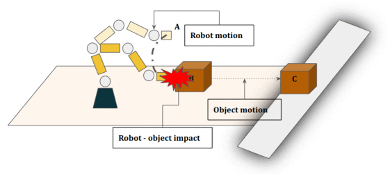
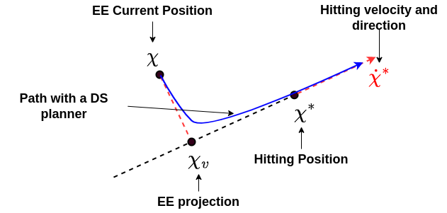
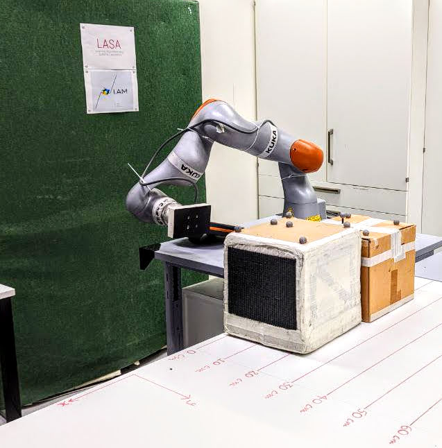
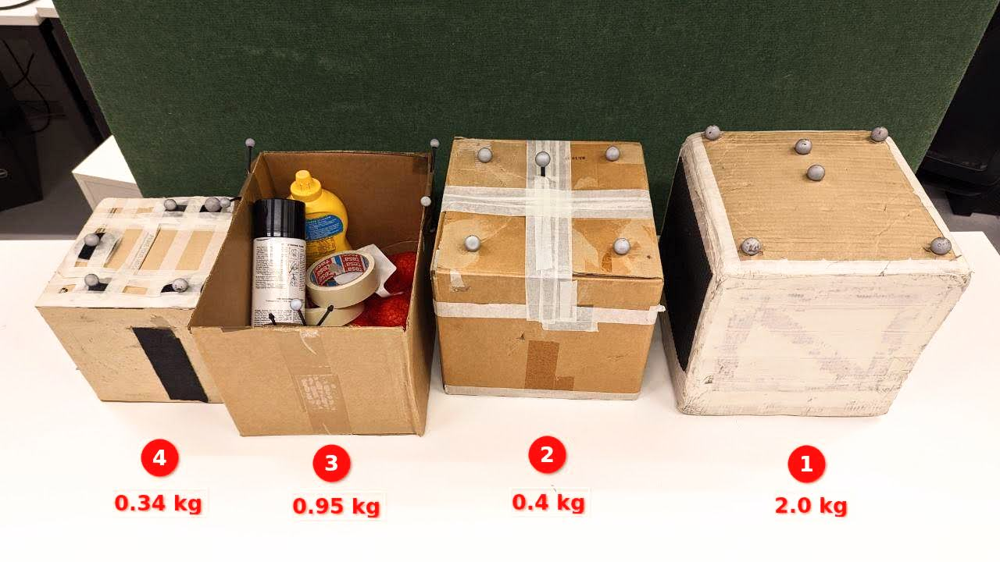
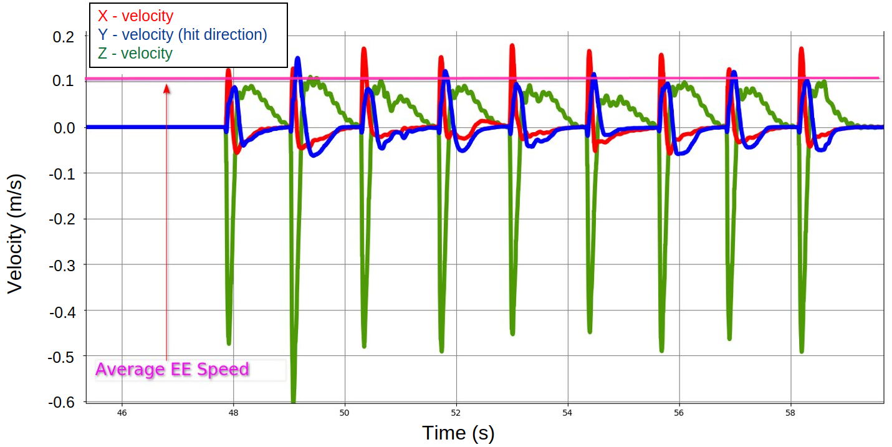
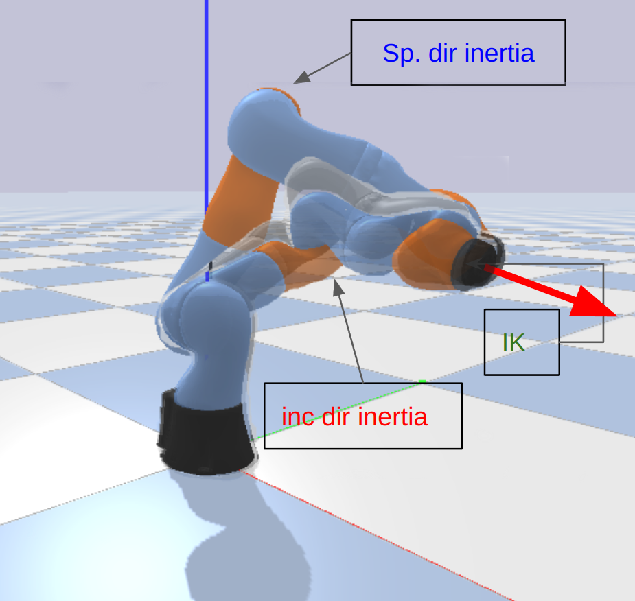

Motion Planning & Control
Introducing hitting flux — a control metric that decouples an object's post-impact motion from the robot's pre-impact configuration.
Pick-and-place and quasi-static pushing confine a fixed manipulator to its own workspace and to objects within its payload limits. Hitting — making contact at a non-zero relative speed — lets a robot place objects beyond its reach, impart velocities exceeding its own hardware limits, and act faster than pushing. But the outcome of a hit depends jointly on the robot's configuration, its speed and the object's inertial properties, which previously meant re-learning a separate model for every object.
The paper proposes hitting flux (Φ), a control metric derived from collision mechanics that depends on the robot's directional inertia, its speed and the object mass, and is directly proportional to the object's post-impact speed. By controlling this single quantity, the post-impact object behaviour is decoupled from the specific pre-impact joint configuration — so the same desired flux produces the same object motion from many different robot postures.
Validated in simulation over ~192 trajectories and on a real KUKA LBR iiwa 7, the approach produces repeatable post-impact object motion (RMSE in average object displacement) and generalises across boxes of different sizes and masses, including open boxes with uneven mass distribution unsuitable for suction grippers. The inertia-QP controller reaches configurations far closer to the desired inertia than a plain inverse-kinematics controller.

Concept — hitting flux

Flux-based dynamical system

KUKA LBR iiwa 7 setup

Placing boxes by hitting

High-speed intercept

IK vs. Inertia-QP configuration